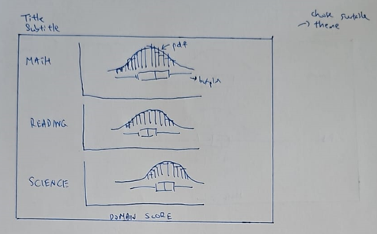
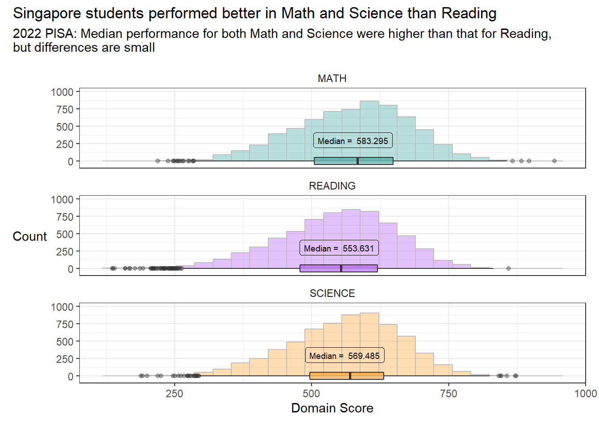
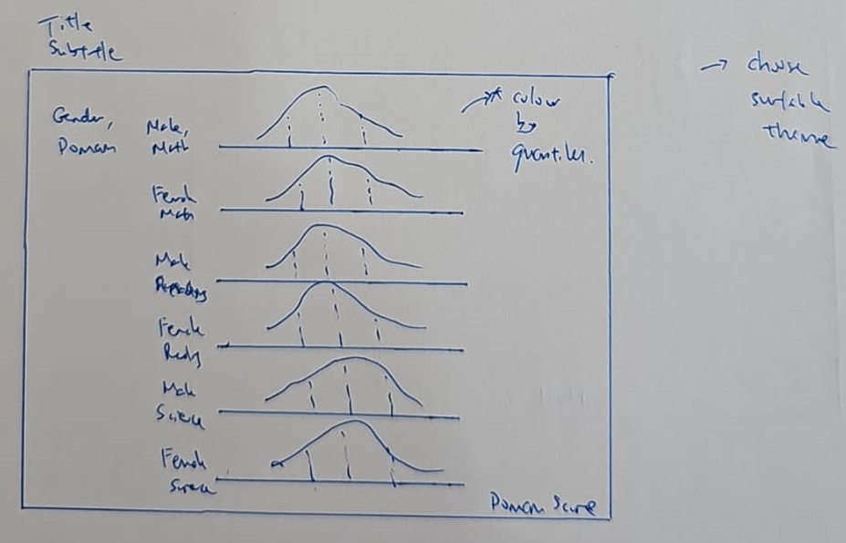
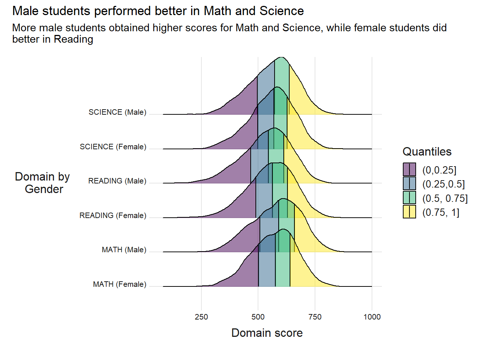
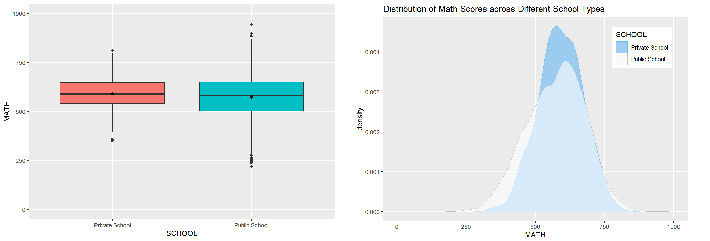
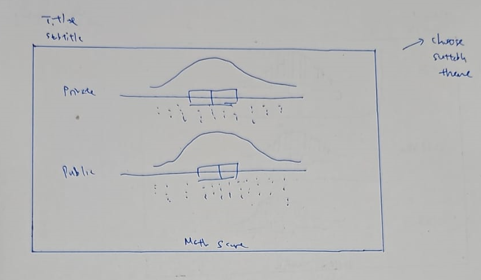
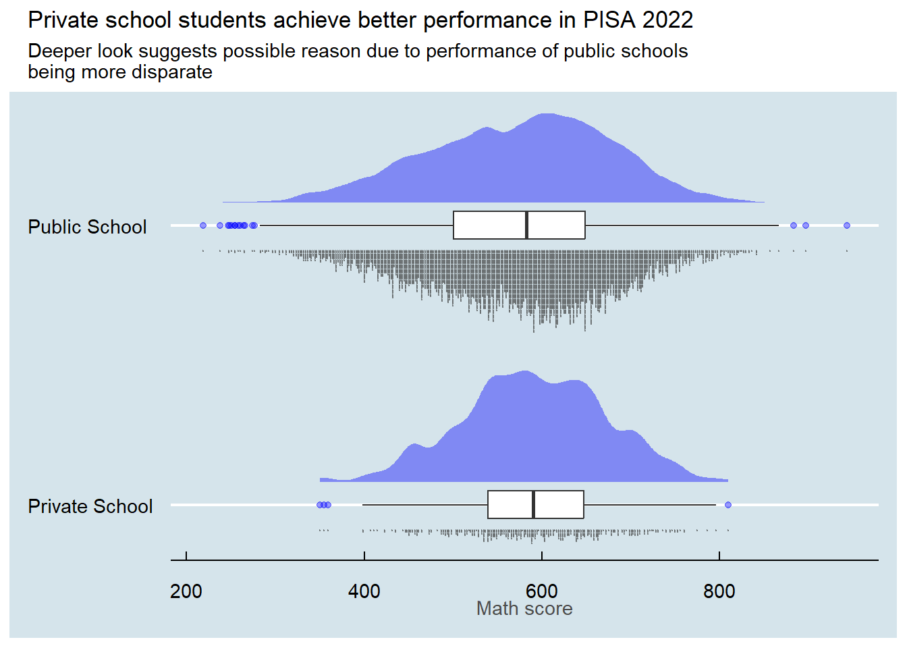
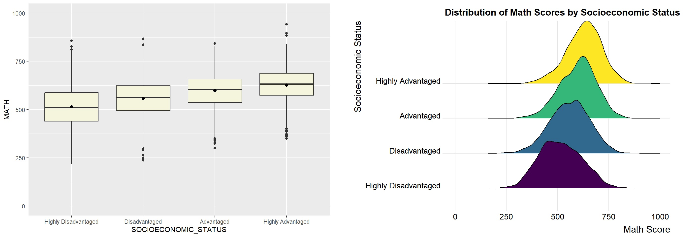
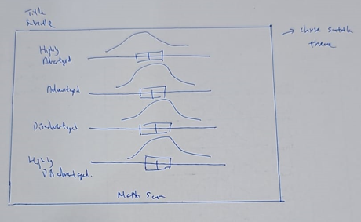
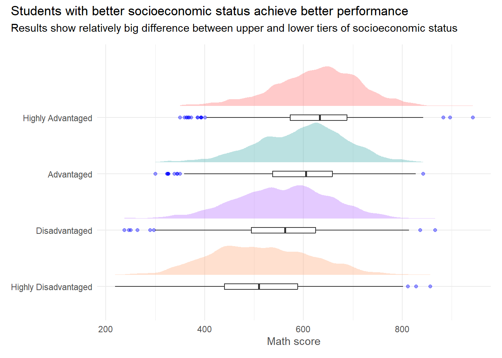

Code
pacman::p_load(tidyverse, haven, ggrepel, patchwork, ggplot2,
ggthemes, hrbrthemes, dplyr, tidyr, knitr, ggridges, ggdist, ggstance)Take-home Exercise 2
In this take-home exercise, a Take-home Exercise 1 submission (original submission here) prepared by my classmate in ISSS608 AY 2023-24 Jan Term, was chosen for DataViz makeover. The submission was assessed in terms of both clarity and aesthetics, and a sketch of an alternative DataViz design was prepared using data visualisation design principles and best practices learnt in first 2 lessons. The alternative design was next implemented using R ggplot2, ggplot2 extensions and tidyverse packages.
The pacman::p_load() function is used to install and load the required R packages into the R environment, as below.
pacman::p_load(tidyverse, haven, ggrepel, patchwork, ggplot2,
ggthemes, hrbrthemes, dplyr, tidyr, knitr, ggridges, ggdist, ggstance)Compared to the original submission, these 2 additional package were loaded:
To reproduce the steps used in the original submission in preparing the dataset, the following code chunk uses the read_sas() of haven to import PISA data into R environment.
stu_qqq <- read_sas("data/cy08msp_stu_qqq.sas7bdat")Filtering the entire data file for records belonging to Singapore students.
stu_qqq_SG <- stu_qqq %>%
filter(CNT == "SGP")Saving the records belonging to Singapore students into “stu_qqq_SG.rds” file for easier loading (no need to extract the records from the entire dataset repeatedly).
write_rds(stu_qqq_SG,
"data/stu_qqq_SG.rds")Loading the extract records from the saved “stu_qqq_SG.rds” file.
sfu_qqq_SG <- read_rds("data/stu_qqq_SG.rds")Following code chunk uses select() to extract selected variables for further analyses.
stu_qqq_SG_v2 <- sfu_qqq_SG %>%
select(CNTSTUID,PV1MATH,PV1READ,PV1SCIE,STRATUM,ST004D01T,ESCS) %>%
rename(STUDENT_ID=CNTSTUID,
MATH=PV1MATH,
READING=PV1READ,
SCIENCE=PV1SCIE,
SCHOOL=STRATUM,
SOCIOECONOMIC_STATUS=ESCS,
GENDER=ST004D01T)According to the original submission, only PV1 values were used for further analysis.
The code chunk below uses to check missing values:
sum(is.na(stu_qqq_SG_v2))[1] 47The code chunk below uses drop_na() to remove missing values:
stu_qqq_SG_v3 <- stu_qqq_SG_v2 %>%
drop_na()
sum(is.na(stu_qqq_SG_v3))[1] 0Code below use recode() to recode gender and nitle() to bin socioeconomic status
stu_qqq_SG_final <- stu_qqq_SG_v3 %>%
mutate(GENDER = recode(GENDER,
`1` = "Female",
`2` = "Male"),
SCHOOL = recode(SCHOOL,
"SGP01" = "Public School",
"SGP03" = "Private School")) %>%
mutate(SOCIOECONOMIC_STATUS = ntile(SOCIOECONOMIC_STATUS, 4), .after = SOCIOECONOMIC_STATUS) %>%
mutate(SOCIOECONOMIC_STATUS = recode(SOCIOECONOMIC_STATUS,
`1` = "Highly Disadvantaged",
`2` = "Disadvantaged",
`3` = "Advantaged",
`4` = "Highly Advantaged")) %>%
mutate(SOCIOECONOMIC_STATUS = factor(SOCIOECONOMIC_STATUS,
levels = c("Highly Disadvantaged", "Disadvantaged",
"Advantaged", "Highly Advantaged"),
ordered = TRUE))The final data is displayed by using knitr::kable() function.
kable(head(stu_qqq_SG_final), "simple")| STUDENT_ID | MATH | READING | SCIENCE S | CHOOL G | ENDER S | OCIOECONOMIC_STATUS |
|---|---|---|---|---|---|---|
| 70200001 | 639.004 | 676.298 | 710.634 | Public School | Female | Disadvantaged |
| 70200002 | 697.191 | 625.585 | 670.646 | Public School | Male | Advantaged |
| 70200003 | 693.710 | 620.116 | 666.095 | Public School | Male | Highly Disadvantaged |
| 70200004 | 427.317 | 381.495 | 340.308 | Public School | Male | Highly Disadvantaged |
| 70200005 | 436.462 | 448.199 | 456.333 | Public School | Female | Disadvantaged |
| 70200006 | 569.982 | 469.441 | 475.158 | Public School | Female | Disadvantaged |
Verified that sample data of final dataset is similar to that used in original submission.
The following section details the critique and remake of the data visualisations prepared in the original submission.


Clarity
|
Aesthetics
|

The code chunk below was used to provide the DataViz makeover to address the above critique:
stu_viz1 <- stu_qqq_SG_final %>%
select(c("STUDENT_ID", "MATH", "READING", "SCIENCE")) %>%
pivot_longer(cols = c("MATH", "READING", "SCIENCE"), names_to = "Domain", values_to = "SCORE")
pal <- c("#159090", "#A034F0", "#FF8C00" )
# below chunk is for annotation
annotate <- data.frame(
label = c(paste("Median = ", toString(median(stu_qqq_SG_final$MATH))),
paste("Median = ", toString(median(stu_qqq_SG_final$READING))),
paste("Median = ", toString(median(stu_qqq_SG_final$SCIENCE)))),
Domain = c("MATH", "READING", "SCIENCE"),
x = c(575, 550, 560),
y = c(300, 300, 300))
pp <- ggplot(stu_viz1,
aes(x = SCORE,
y = 0,
fill = Domain)) +
geom_histogram(aes(y=after_stat(count)), bins = 25, alpha = 0.3, color = "grey") +
ggstance::geom_boxploth(width = 100,
outlier.alpha = 0.4,
alpha = 0.5) +
guides(fill=FALSE,
color=FALSE) +
scale_fill_manual(values = pal, guide = "none") +
labs(x="Domain Score",
y="Count") +
scale_y_continuous(limits = c(-50,1000)) +
facet_wrap(~Domain, nrow = 3, scales = "free_y", strip.position = "top") +
theme_bw() +
theme(strip.background = element_blank(),
strip.placement = "outside",
axis.title.y = element_text(angle=0, vjust = 0.5)) +
plot_annotation(title = "Singapore students performed better in Math and Science than Reading", subtitle = "2022 PISA: Median performance for both Math and Science were higher than that for Reading, \nbut differences are small")
pp + geom_label(data = annotate,
mapping = aes(x=x, y=y, label=label),
size = 2.5,
fill = NA)
Improvements from the makeover:
Clarity:
Aesthetics:
The usage of a histogram follows the choice of the original designer, assuming that there is a reason for using a histogram. Another option would be to use a kernel density curve instead of a histogram, which will provide a smooth curve that estimates the frequency distribution without having to “bin” the data.

Clarity
|
Aesthetics
|

The code chunk below was used to provide the DataViz makeover to address the above critique:
stu_viz2 <- stu_qqq_SG_final %>%
select(c("STUDENT_ID", "MATH", "READING", "SCIENCE", "GENDER")) %>%
pivot_longer(cols = c("MATH", "READING", "SCIENCE"), names_to = "Domain", values_to = "SCORE")
stu_viz2["Gender_Domain"] <- paste0(stu_viz2$Domain, " (", stu_viz2$GENDER, ")")
ggplot(stu_viz2,
aes(x=SCORE,
y=Gender_Domain,
fill=factor(stat(quantile)))) +
stat_density_ridges(
geom="density_ridges_gradient",
calc_ecdf = T,
quantiles = 4,
quantile_lines = T) +
scale_fill_viridis_d(name = "Quantiles", alpha = 0.5,
labels = c("(0,0.25]",
"(0.25,0.5]",
"(0.5, 0.75]",
"(0.75, 1]")) +
labs(x = "Domain score",
y = "Domain by \nGender") +
theme_ridges() +
theme(axis.title.y = element_text(angle = 0, hjust = 0.5),
axis.title.x = element_text(hjust = 0.5),
axis.text = element_text(size = 8, color = "grey10"),
text = element_text(size = 12, color = "grey10")) +
plot_annotation(title = "Male students performed better in Math and Science", subtitle = "More male students obtained higher scores for Math and Science, while female students did \nbetter in Reading")
Improvements from the makeover:
Clarity:
Aesthetics:
For this makeover, the original focused more on the Math performance, hence I have used the Math performance for my makeover too.

Clarity
|
Aesthetics
|

The code chunk below was used to provide the DataViz makeover to address the above critique:
stu_viz3 <- stu_qqq_SG_final %>%
select(c("STUDENT_ID", "MATH", "SCHOOL"))
ggplot(stu_viz3,
aes(x=SCHOOL,
y=MATH)) +
stat_halfeye(adjust=0.5,
justification=-0.2,
.width=0,
point_colour = NA,
scale=0.4,
fill = "blue",
alpha = 0.4) +
geom_boxplot(width=.1,
outlier.alpha = 0.4,
outlier.color = "blue") +
stat_dots(side = "left",
justification = 1.1,
binwidth = unit(0.0022, "npc"),
dotsize = 1,
alpha = 0.4,
position = "dodge",
color = "black") +
labs(y="Math score") +
coord_flip(xlim = c(1.4, 1.8)) +
theme_economist() +
theme(axis.title.y = element_blank(),
axis.title.x = element_text(color = "grey30")) +
plot_annotation(title = "Private school students achieve better performance in PISA 2022", subtitle = "Deeper look suggests possible reason due to performance of public schools \nbeing more disparate")
Improvements from the makeover:
Clarity:
Aesthetics:
For this makeover, the original focused more on the Math performance, hence I have used the Math performance for my makeover too.

The critique is similar to that in 3.3 as the plots used are similar.
Clarity
|
Aesthetics
|

The code chunk below was used to provide the DataViz makeover to address the above critique:
stu_viz4 <- stu_qqq_SG_final %>%
select(c("STUDENT_ID", "MATH", "SOCIOECONOMIC_STATUS"))
pal <- c("#FF8C00", "#A034F0", "#159090", "red")
ggplot(stu_viz4,
aes(x=SOCIOECONOMIC_STATUS,
y=MATH)) +
stat_halfeye(aes(color=SOCIOECONOMIC_STATUS,
fill=after_scale(colorspace::lighten(color, .3))),
adjust=0.5,
justification=-0.3,
.width=0,
point_colour = NA,
scale=0.7,
alpha = 0.4) +
geom_boxplot(width=.1,
outlier.alpha = 0.4,
outlier.color = "blue") +
scale_color_manual(values = pal, guide = "none") +
scale_fill_manual(values = pal, guide = "none") +
labs(y="Math score") +
coord_flip() +
theme_minimal() +
theme(axis.title.y = element_blank(),
axis.title.x = element_text(color = "grey30")) +
plot_annotation(title = "Students with better socioeconomic status achieve better performance", subtitle = "Results show relatively big difference between upper and lower tiers of socioeconomic status")
Improvements from the makeover:
Clarity:
Aesthetics:
This exercise provided an opportunity to assess critically on data visualisations that were prepared by others, to better understand what works, and how it can be improved from the perspective of a non-expert viewer, and helped to reinforce the concepts of good data visualisations taught in class.
Many thanks to the original creator of the data visualisations used in this exercise. 😊